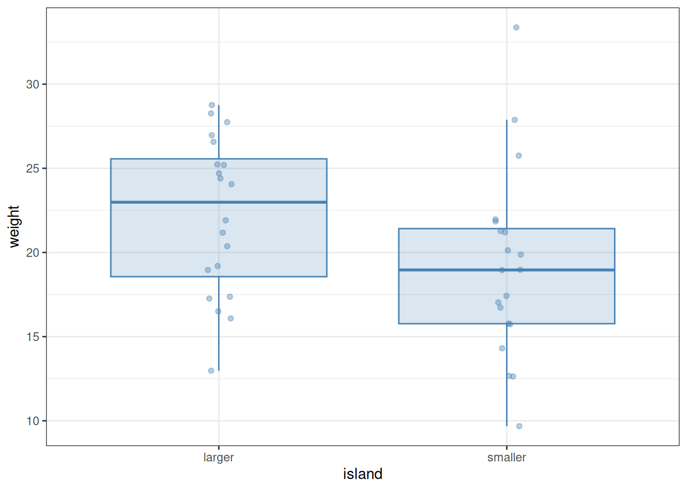

In this chapter we will take a first look at statistical tests of the simplest kind: comparing two groups of data. To illustrate why statistical inference is needed in such comparisons, let us take a look at a fictive dataset which contains an equally fictive set of weight measurements of different bird individuals from the same species. The birds are assumed to come from two islands, a larger and a smaller one. The question is: do the data provide evidence of insular dwarfism—that is, the phenomenon that the body sizes of species tend to decline on small islands?
We can load the data:
library(tidyverse)bird <-read_csv("t_test_example.csv")print(bird, n =Inf)
A quick visualization below looks promising, with individuals on the smaller island indeed appearing to be smaller:
ggplot(bird) +aes(x = island, y = weight) +geom_boxplot(colour ="steelblue", fill ="steelblue",alpha =0.2, outlier.shape =NA) +geom_jitter(alpha =0.4, width =0.05, colour ="steelblue") +theme_bw()

Note
In the above plot, geom_jitter was used to display the actual data points that are summarized by the boxplots. The function geom_jitter is just like geom_point, except it adds a random sideways displacement to the data points, to reduce visual overlap between them. The width = 0.05 option restricts this convulsion of the points to a relatively narrow band. Since all data points are now displayed, it makes no sense to rely on the feature of box plots which explicitly draws points that are classified as outliers—their plotting is turned off by the outlier.shape = NA argument to geom_boxplot. It is a useful exercise to play around with these settings, to see what the effects of changing them are.
Furthermore, the computed difference between the means and medians of the two samples are also clearly different:
bird %>%group_by(island) %>%summarise(mean =mean(weight), median =median(weight))
# A tibble: 2 × 3
island mean median
<chr> <dbl> <dbl>
1 larger 22.2 23.0
2 smaller 19.2 19.0
Can we conclude that the two samples are indeed different, and birds on the smaller island tend to be smaller, supporting the insular dwarfism hypothesis? As mentioned above, the data are fictive—they are not based on actual measurements. In fact, these “observations” were created by sampling each data point from the same distribution, regardless of island: a normal distribution with mean 20 and standard deviation 5. This means that any supposedly observed difference between the samples must be accidental. Would various statistical methods detect a difference? One thing we can do is what we have already done in Section 6.1: compute the 95% confidence intervals of the means, and see whether and how much they overlap.
bird %>%group_by(island) %>%summarise(mean =mean(weight), # Means of the two groupssd =sd(weight), # Standard deviationsN =n(), # Sample sizesSEM = sd /sqrt(N), # Standard errors of the meansCI =qt(0.975, N -1)) %>%# Confidence intervalsungroup() %>%# Ungroup the data (not necessary here, but a good habit)ggplot(aes(x = island, y = mean, ymin = mean - CI, ymax = mean + CI)) +geom_point(colour ="steelblue") +geom_errorbar(colour ="steelblue", width =0.2) +ylab("mean and 95% confidence interval") +theme_bw()
As seen, there is overlap between the 95% confidence intervals. While that by itself is not conclusive, it is an indication that the difference between the two samples may not be as relevant as it might have initially looked.
Let us wait no longer, and perform a statistical test. One widely used test to check if two samples differ from one another is the Wilcoxon test (also known as the Mann-Whitney test). Its implementation is very simple:
wilcox.test(weight ~ island, data = bird)
Wilcoxon rank sum exact test
data: weight by island
W = 271, p-value = 0.05589
alternative hypothesis: true location shift is not equal to 0
The function takes two arguments: a formula, and the data to be analyzed, in the form of a data frame or tibble. The formula in the first argument establishes a relationship between two (or more) columns of the data. We will discuss formulas and their syntax in more detail later. For now: the way to write them is to first type the variable we wish to predict or explain, then a tilde (~), and then the explanatory variable (predictor) by which the data are subdivided into the two groups. In our case, we are trying to explain the difference in weight between the islands, so weight comes before the tilde and the predictor island comes after.
Note
We have used the tilde (~) before, when faceting plots with facet_grid; see Section 7.3. However, the tilde used in facet_grid has nothing to do with the one we use in formulas: the two symbols happen to be identical, but that is just an accident.
Let us now look at the output produced by wilcox.test above. Most of it is not particularly relevant for us: we are first informed that a Wilcoxon rank sum exact test is being performed; then we see that we are explaining weight differences by island; then we see the test statistic W itself (we need not concern ourselves with its precise meaning); then the p-value; and finally, a reminder of what the alternative hypothesis is (the null hypothesis is that the shift in location is in fact zero).
What we are really interested in is the p-value. This tells us the probability of observing a result at least as extreme as we see in our data, given that the null hypothesis is true. In our case, this probability is 0.056. That is, if we habitually accepted evidence with this p-value, we would be wrong once out of every 18 inferences. Since science leans towards erring on the side of caution (i.e., we would rather miss out on making a discovery than falsely claim having seen an effect), this value is in general a bit high for comfort. And indeed: since we know that the data were generated by sampling from the same distribution, any distinctiveness between them is incidental.
Note
In many subfields of science, it is standard practice to consider p-values falling below 0.05 as “significant” and those falling above as “non-significant”. Besides the fact that such a one-size-fits-all approach ought to be suspect even under the best of circumstances, a significance threshold of 0.05 is awfully permissive to errors. In fact, we should expect about one out of twenty of all papers ever published which have adopted this cutoff to be wrong! Digging deeper into this issue reveals that the figure is possibly much worse—see, e.g., the paper by David Colquhoun (2014).1 One way to ameliorate the problem is to use stricter significance thresholds—and, of course, to always use common sense as well as prescribed recipes when dealing with real-world problems and data.
It is possible to calculate confidence intervals within the Wilcoxon test as well. All one needs to do is pass conf.int = TRUE as an argument:
wilcox.test(weight ~ island, data = bird, conf.int =TRUE)
Wilcoxon rank sum exact test
data: weight by island
W = 271, p-value = 0.05589
alternative hypothesis: true location shift is not equal to 0
95 percent confidence interval:
-0.018386 6.820811
sample estimates:
difference in location
3.436204
As additional output, we now receive the 95% confidence interval, as well as the explicit difference between the locations of the two samples. (A small word of caution: this difference is neither the difference of the means nor the difference of the medians, but the median of the difference between samples from the two groups of data.) The confidence interval, as seen, includes zero, which means that one cannot rule out the possibility of there being no true difference in the locations of the underlying populations.
The confidence level defaults to 95%, but this can be changed via the conf.level argument. For example, to use a 99% confidence interval instead:
wilcox.test(weight ~ island, data = bird, conf.int =TRUE, conf.level =0.99)
Wilcoxon rank sum exact test
data: weight by island
W = 271, p-value = 0.05589
alternative hypothesis: true location shift is not equal to 0
99 percent confidence interval:
-1.16832 7.70439
sample estimates:
difference in location
3.436204
In summary, the Wilcoxon test failed to reject the null hypothesis that our fictive birds have different sizes across the two islands. While failure to reject the null is not the same as confirming that the null is true (absence of evidence is not evidence of absence!), the notion that the two samples are different could not be supported. In this particular case, since we ourselves have created the original data using the null hypothesis, we have the privilege of knowing that this is the truth. When working with real data, such knowledge is generally not available.
9.2 Some general conclusions
The example of Section 9.1 illustrates two important general points.
First, instead of jumping into statistical tests, we started the analysis with qualitative and descriptive data exploration: we plotted the data, computed its means and medians, etc. This is almost always the correct way to go. (The exception is when one analyzes data from a pre-registered experimental design. In that case, one must follow whatever statistical techniques were agreed upon before data collection even started.) To perform tests “blindly”, without visually exploring the data first, is rarely a good idea.
Second, we only performed the statistical test after we have made an effort to understand the data, and after setting clear expectations about what we might find. We knew, going into the test, that finding a difference between the two island samples was questionable. And indeed, the test revealed that such a distinction cannot be made in good conscience. Following a similar strategy for all statistical inference can save a lot of undue frustration. To make the point more sharply: do not perform a statistical test without knowing what its result will be! A more nuanced way of saying the same thing is that if you think you see a relationship in your data, then you should also make sure that your observation is not just a mirage, by using a statistical test. But if a relationship is not evident, it rarely makes much sense to try to explore it statistically.
9.3 Parametric versus non-parametric tests
The Wilcoxon test we employed is non-parametric: it does not assume either the data or the residuals to come from any particular distribution. This is both the test’s advantage and disadvantage. It is an advantage because fewer assumptions must be satisfied for the test to be applicable. Additionally, non-parametric techniques tend to fare better when only limited data are available. Since in many areas of biology (e.g., in ecology) data are hard to come by, datasets are correspondingly small, making non-parametric techniques a natural candidate for interrogating the data with. On the downside, non-parametric tests tend to be less powerful than parametric ones: the additional assumptions of parametric tests (when they are actually met by real data) make inference easier.
One of the most common parametric alternatives to the Wilcoxon test is Welch’s t-test. Like the Wilcoxon test, the t-test assumes the independence of the two samples. In addition, it also assumes that the samples are normally distributed. Let us see what the t-test says about the fictive bird data we analyzed earlier:
t.test(weight ~ island, data = bird)
Welch Two Sample t-test
data: weight by island
t = 1.8704, df = 36.92, p-value = 0.06937
alternative hypothesis: true difference in means between group larger and group smaller is not equal to 0
95 percent confidence interval:
-0.2520327 6.2997175
sample estimates:
mean in group larger mean in group smaller
22.18479 19.16095
The format of the output is similar to the one with the Wilcoxon test; the main differences are that the confidence intervals are included by default, and that the observed means of the two samples are also reported. Like with wilcox.test, the confidence level can be adjusted through the argument conf.level:
t.test(weight ~ island, data = bird, conf.level =0.99)
Welch Two Sample t-test
data: weight by island
t = 1.8704, df = 36.92, p-value = 0.06937
alternative hypothesis: true difference in means between group larger and group smaller is not equal to 0
99 percent confidence interval:
-1.366524 7.414209
sample estimates:
mean in group larger mean in group smaller
22.18479 19.16095
Importantly, the message conveyed by the p-value of 0.069 is in line with what we saw from the Wilcoxon test: there is no strong evidence to claim that the two samples are different. In this particular case, it does not make any qualitative difference whether one uses the parametric t-test or the non-parametric Wilcoxon test.
In other situations, the choice of test may matter more. The following data have also been artificially created as an example. They contain two groups of data. In the first group (group x), the data have been sampled from a lognormal distribution with mean 0 and standard deviation 1. In the second group (group y), the data have been sampled from a lognormal distribution with mean 1 and standard deviation 1. Thus, we know a priori that the two distributions from which the samples were created are shifted compared to one another: a statistical test ought to reveal this shift. However, since the data are heavily non-normal, a t-test will struggle to do so. Let us load and visualize the data first:
example <-read_csv("t_wilcox_example.csv")ggplot(example, aes(x = measurement)) +geom_histogram(bins =25, alpha =0.3,colour ="steelblue", fill ="steelblue") +facet_wrap(~ group, labeller = label_both) +theme_bw()
The parametric t-test cannot detect a difference between the samples—though, since its assumption of normality is violated, such a test should not be attempted in the first place:
t.test(measurement ~ group, data = example)
Welch Two Sample t-test
data: measurement by group
t = -1.4796, df = 19.622, p-value = 0.1549
alternative hypothesis: true difference in means between group x and group y is not equal to 0
95 percent confidence interval:
-19.853561 3.388384
sample estimates:
mean in group x mean in group y
2.33571 10.56830
By contrast, the non-parametric Wilcoxon test (correctly) suggests that there might be a difference:
wilcox.test(measurement ~ group, data = example, conf.int =TRUE)
Wilcoxon rank sum exact test
data: measurement by group
W = 106, p-value = 0.01031
alternative hypothesis: true location shift is not equal to 0
95 percent confidence interval:
-3.039534 -0.378063
sample estimates:
difference in location
-1.798516
9.4 Including statistical tests in a data analysis pipeline: the dot notation
Colquhoun, D. (2014). An investigation of the false discovery rate and the misinterpretation of p-values. Royal Society Open Science, 1: 140216.↩︎